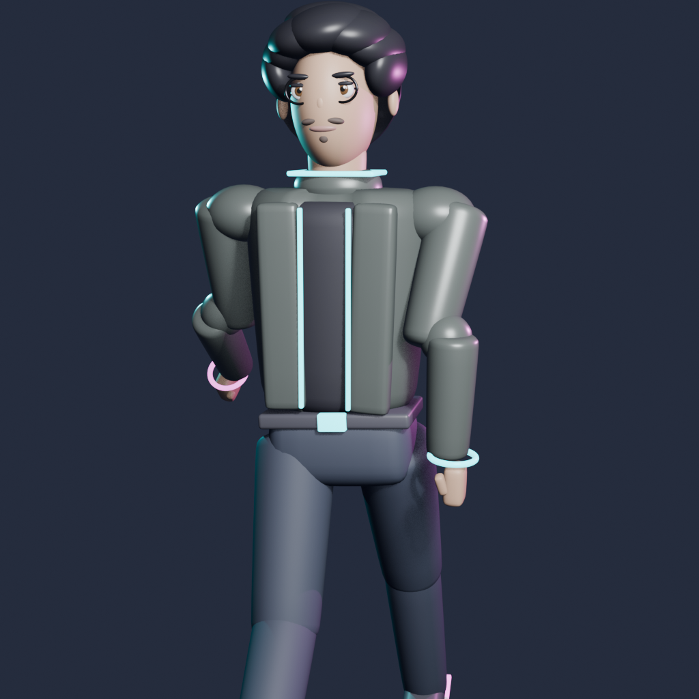
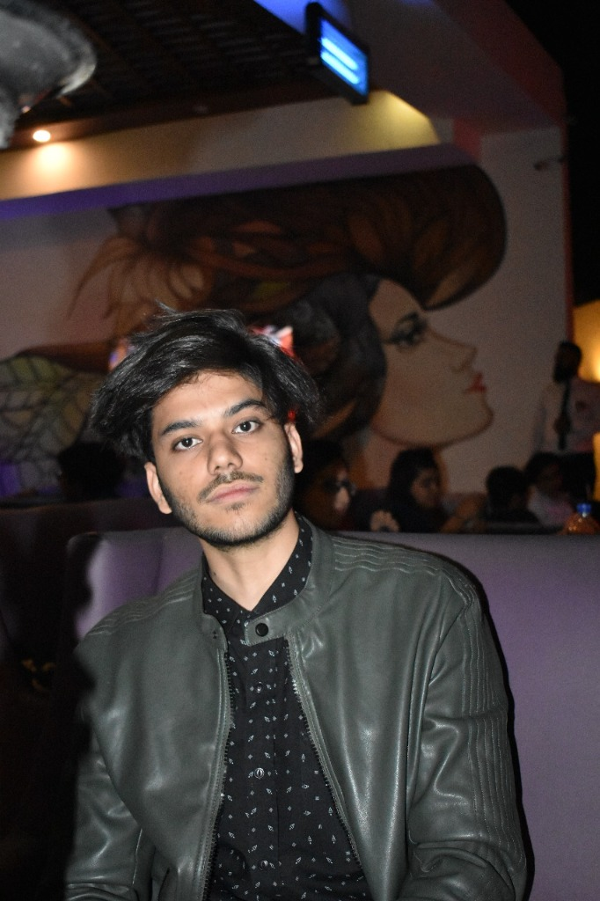
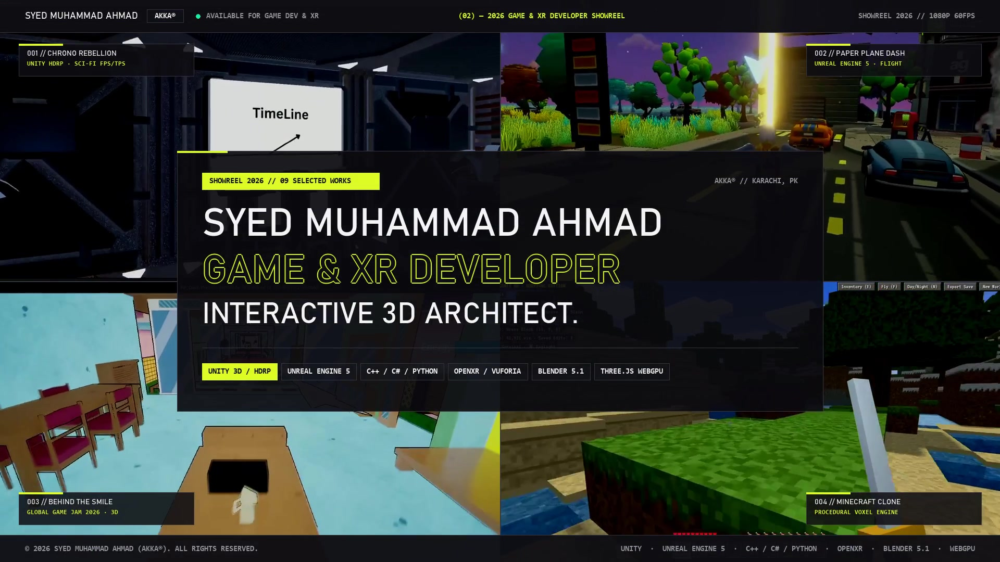
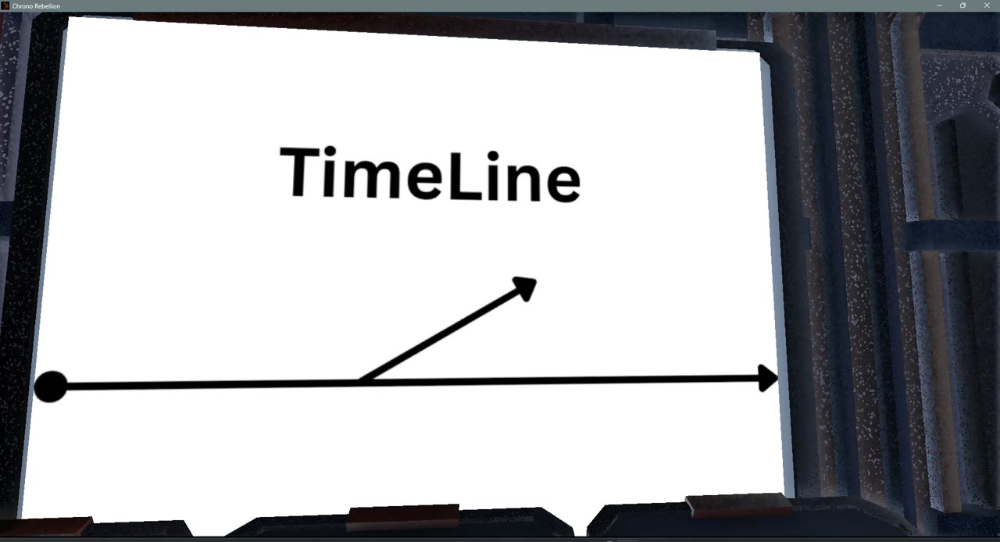

This project integrates real-time WebGPU 3D graphics (Three.js + TSL), a custom-modelled and rigged Blender 5.1 3D avatar, an animated Adobe After Effects promotional video composited with FilmBro VFX overlays and an original synthesized CC0 soundtrack, a Google Gemini Retrieval-Augmented Generation (RAG) AI chatbot with source citations and voice interaction, and a secured Resend email communication system into a unified cyberpunk web portfolio.
| Module | Key Technologies | Deliverable Files |
|---|---|---|
| Module 1: 3D Web Portfolio | Three.js r185 (WebGPU + TSL), BVH Walk Controls, GSAP, Responsive Glassmorphic UI | src/main.js, src/portfolio/createPortfolioUI.js, content/profile.json |
| Module 2: Custom 3D Avatar | Blender 5.1 Python API, 18-Bone Rig, 5 NLA Actions, 3 Facial Shape Keys, glTF 2.0 | blender/build_avatar.py, blender/avatar.blend, public/models/avatar.glb |
| Module 3: Promotional Video | Adobe After Effects ExtendScript, FilmBro VFX Pack, Python CC0 Synthwave Audio, FFmpeg | video/build_promo.jsx, video/promo.aep, public/video/promo.mp4 |
| Module 4: RAG AI Chatbot | Gemini Embeddings (768-d) + BM25 Hybrid Search, Gemini Flash LLM, Citations, Voice I/O | scripts/ingest.mjs, data/vector-index.json, api/chat.js, api/_lib/retriever.js |
| Module 5: Email & Contact | Shared Client/Server Validation, Honeypot + Timing Guard, Rate Limit, Resend API | shared/validation.js, api/contact.js, api/_lib/http.js |
| Module 6: Deployment & Docs | Vercel Serverless Functions, Security Headers, Analytics, Setup Guide & Report | vercel.json, .env.example, README.md, docs/Project_Report.pdf |
The 3D environment renders a rain-soaked cyberpunk alley using Three.js's WebGPURenderer and Three Shading Language (TSL) node materials:
positionWorld into a half-float render target; a GPU compute shader integrates raindrop positions and respawns splashes upon roof/prop impact.
An original stylized 3D character representing Syed Muhammad Ahmad was created via a reproducible Blender 5.1 Python pipeline (blender/build_avatar.py) and saved as both blender/avatar.blend and public/models/avatar.glb (1.3 MB):
#00E5FF) piping, dark jeans, sneakers with magenta heel accents, sleek dark-rimmed glasses, a multi-material head mesh with clean jawline stubble, moustache, and sculpted voluminous swept-up hair locks.Root, Hips, Spine, Chest, Neck, Head, Shoulder.L/R, UpperArm.L/R, LowerArm.L/R, Hand.L/R, UpperLeg.L/R, LowerLeg.L/R, Foot.L/R) and 5 NLA animation clips: Idle, Wave, Talk, Point, and Victory.Blink, Smile, and MouthOpen shape keys. In the 3D scene (src/world/avatar/loadAvatar.js), the avatar stands beside the Quadra car, waves automatically when the player walks near, tracks the mouse cursor with his head bone, and lip-syncs when the AI chatbot speaks.

A 46-second 1080p@30fps promotional video (public/video/promo.mp4) and After Effects project (video/promo.aep + video/build_promo.jsx) introduce Syed Muhammad Ahmad, his technical arsenal, and his game development portfolio:
video/music/make_music.py) at 100 BPM in A minor with kick, snare, clap, hi-hats, detuned saw pad chords, 16th-note bass arpeggio, filter sweeps, risers, and downbeat impacts.

AHMAD.AI)The RAG assistant answers visitor questions strictly grounded in Syed Muhammad Ahmad's CV and project documentation:
scripts/ingest.mjs): Parses content/profile.json, knowledge/SyedMuhammadAhmad_CV.pdf (via unpdf), and knowledge/portfolio-details.md into 28 structured documents and splits them on heading and sentence boundaries into 44 overlapping chunks (700 chars, 120-char overlap).data/vector-index.json): Computes L2-normalized 768-dimensional embeddings via Google's gemini-embedding-001 model and builds an in-memory BM25 inverted index.api/_lib/retriever.js): Combines dense cosine similarity (75% weight) with normalized BM25 keyword scores (25% weight) and enforces per-source diversity to select the top-6 chunks.api/chat.js): Passes numbered <sources> into Gemini Flash with a system instruction forbidding ungrounded claims, returning bracketed citations [1], [2] that open the exact portfolio section when clicked. Includes multilingual translation and Web Speech API voice input/output.
The contact system (shared/validation.js + api/contact.js) validates name, email, subject, and message identically on the client and server, escapes all HTML, blocks bots via a hidden website honeypot field, a 3-second minimum fill-time check, and a sliding-window IP rate limiter (5 requests / 10 min), and delivers formatted HTML + plain-text emails via the Resend API using environment variables (RESEND_API_KEY, CONTACT_TO_EMAIL).
The project builds cleanly with npm run build (Vite 6 production bundle) and is configured via vercel.json for zero-config deployment to Vercel, bundling data/vector-index.json alongside the serverless API routes /api/chat and /api/contact.